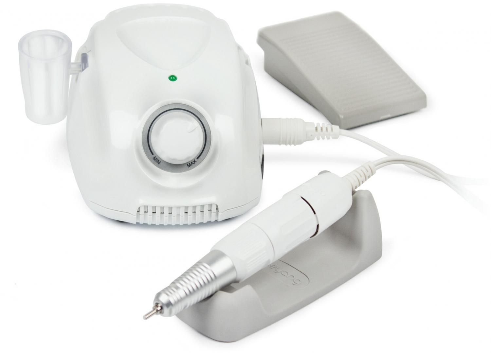

Основные ошибки в маникюре.
Делать ошибки на пути освоения маникюрного аппаратного маникюра нормально как для начинающих мастеров, так и при домашнем исполнении, ведь все мы с чего-то начинаем. И первое, что необходимо сделать, прочитать предостережения, которыми делятся уже бывалые мастера, чтобы впоследствии не допускать глупых и ненужных ошибок.
Здесь представлены самые распространенные из них.
1. Неполное раскрытие кутикулы
Если ты уже предвкушаешь как будешь снимать кутикулу шаром, и считаешь его самым непредсказуемым в аппаратном маникюре, то мастера заверяют, что наиболее сложным является правильно раскрыть кутикулу. Для того чтобы процесс прошел удачно и ногти и кожа не повредились, необходимо раскрыть кутикулу на 90 градусов. Иначе кутикула может порадовать своим ростом уже через дня 2.

2. Неправильно подобранная фреза
При поднятии кутикулы необходимо правильно подбирать фрезу. Нельзя использовать слишком тонкую, чтобы не ранить кожу, но и перебарщивать не стоит. Допустим пулей можно легко сделать на ногте пропилы, так как конец там довольно широкий.
3. Неправильная техника счищения кутикулы шаром
Работа с такой фрезой должна проходить в два этапа. Сначала необходимо легко пройтись по кутикуле насадкой, чтобы приподнять. После уже можно приступать к снятию кутикулы. Если пропустить первый этап, то на коже останутся заусенцы и ранки.
4. Слишком высокие или низкие обороты фрезы
Скорость приборов для аппаратного маникюра может достигать 30 тысяч оборотов в минуту. Обычно мастера работают на 10-12 тыс. оборотов в минуту, а начинающим рекомендуется брать 4 или 6 тысяч. Иначе можно запросто сжечь как ноготь, так и повредить кожу.
5. Неправильная очередноть в выполнении маникюра
На этом этапе маникюра ошибиться очень просто, так что давайте рассмотрим главные пункты.
1. Поднятие и раскрытие кутикулы.
2. Прочистка боковых пазух и зоны под кутикулой насадками пуля и шар.
3. Очищение поднятой кутикулы.
4. Шлифовка реза полировщиком.
Несоблюдение этапов повлияет на качество маникюра и срок его жизни.
6. Длительная работа фрезой на одном месте
Самая распространенная ошибка заключается в долгом прорабатывании участка ногтя. Как последствия - микротравмы, пропилы, заусенцы, ожоги пластины.
7. Аппаратный маникюр на травмированной коже, пластине или влажных ногтях
Для начала необходимо привести ногти в норму, а также высушить их, иначе есть шанс не только повредить саму пластину, но и привести аппарат в нерабочее состояние, поле чего придется ждать, когда фреза очистится от опилок.
8. Отсутствие дезинфекции аппарата, рук
Прежде всего необходимо продезинфицировать сами руки, чтобы впоследствии в ранки не попали бактерии или инфекция. То же самое касается и аппарата с которым мы работаем. При пренебрежении такими простыми правилами есть шанс испортить весь кайф от маникюра.
9. Ненужная спешка во время процесса
Некоторые начинающие мастера не досушивают маникюр, что приводит к отслойкам уже в первые же дни. Для того чтобы избежать такого исхода, необходимо после каждого нанесения лака убирать руку в лампу на определенное время. Но в разных лампах и время отличается. Все зависит от их мощности. Например, одни сушат материал за минуту, другие за 2, а то и 3 минуты.
10. Непроработанный лаком конец ногтя
Некоторые делают идеальный маникюр, думая, что будут носить его еще минимум недели 3. По итогу не проработанный конец ногтя заставляет пересмотреть планы на жизнь и искать причину отслойки.

Есть еще много ошибок, которые практикуются неопытными мастерами в их начинаниях, но избежание вышеперечисленного позволит им уже понять принцип работы с ногтями и кожей и предостережет от нежелательного опыта.

Чтобы маникюр держался долго, необходимо постоянно практиковаться, а также в периодах давать ногтям отдых. Особенно если вы чувствуете, что с ними что-то не так: стали более ломкими, сгибаемыми, появляются неприятные ощущения при нажатии(скорее всего ожог).
Но некоторые продолжают добивать ногти и по итогу хорошая пластина приобретает новые неприятные как физические, так и эстетические очертания. Чтобы привести ногти в порядок необязательно делать им ванночки из белого вина. В крайнем случае можно посетить врача или мастера, чтобы узнать, что делать дальше.